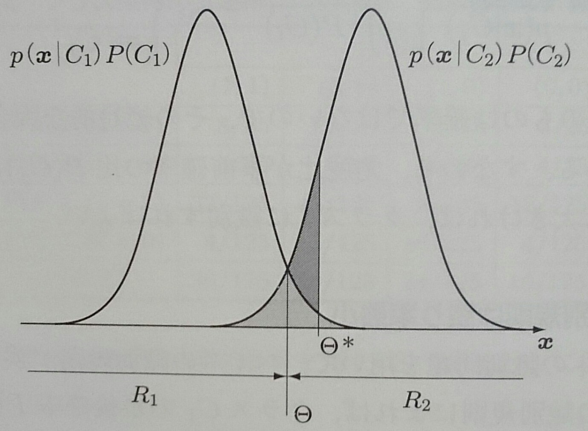
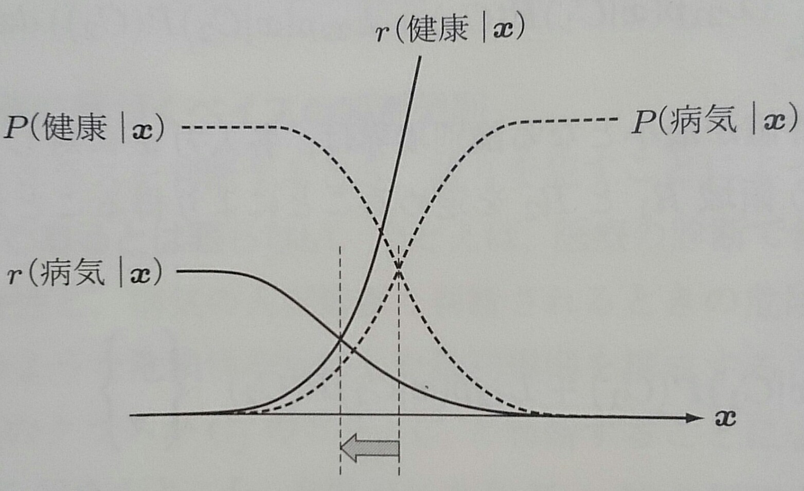
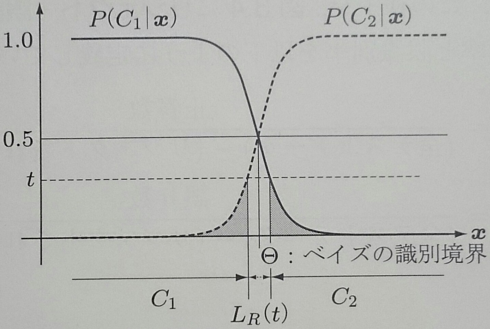
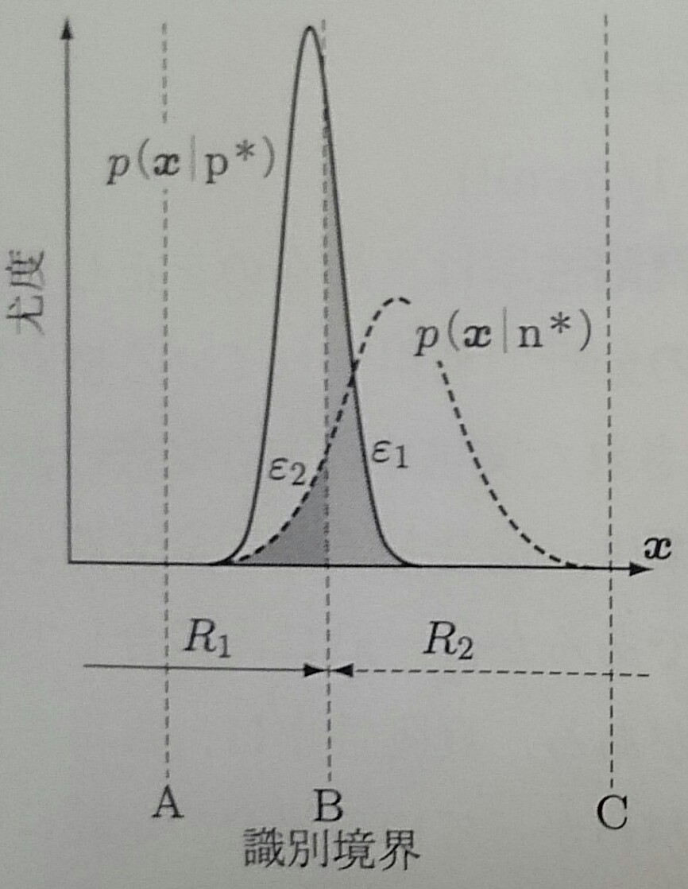
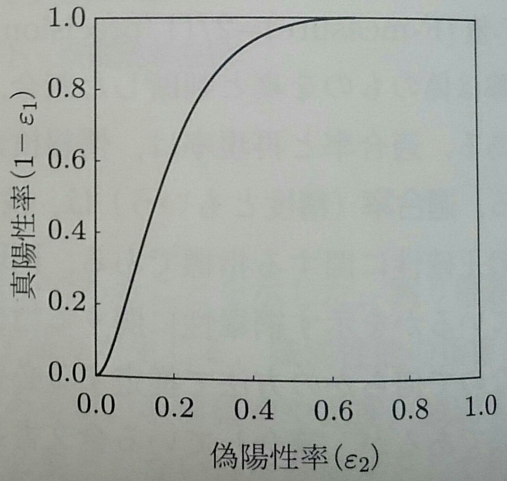
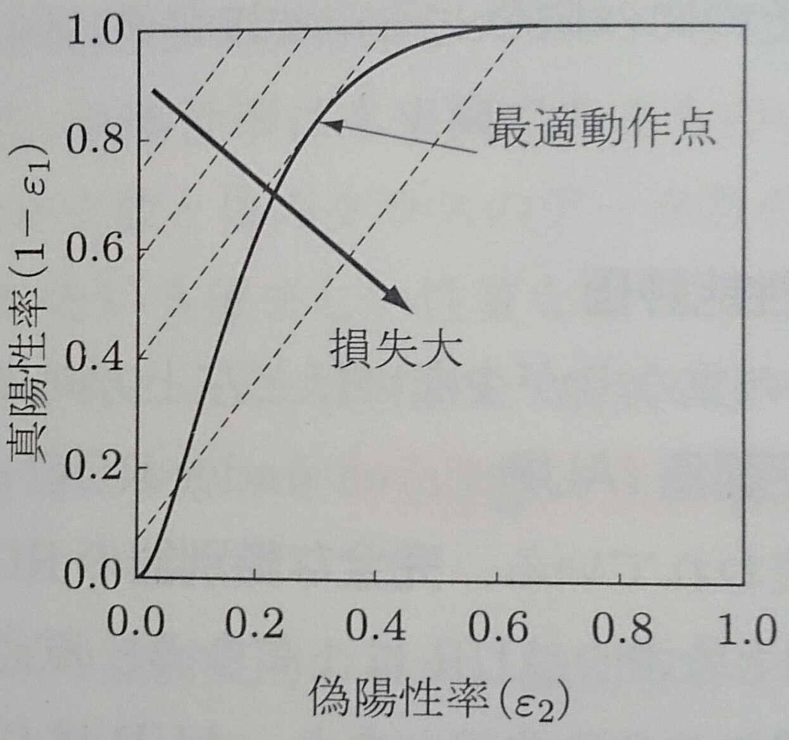

Created by 2GMon
観測データ${\bf x}$と所属するクラスの間に確率分布が仮定される識別問題について考える
ここでは、最大事後確率基準に基づくベイズの識別規則を定義し、ベイズの識別規則が誤り率最小になることを示す
観測データを${\bf x}$、識別クラスを$C_i ; (i = 1, \cdots, K)$とする
ベイズの識別規則は、以下で定義される事後確率が最も大きなクラスに観測データを分類する $$ P(C_i|{\bf x}) = \frac{p({\bf x}|C_i)}{p({\bf x})} P(C_i) = 修正項 * 事前確率 $$
クラス$C_i$と$C_j$の識別境界は、事後確率が等しくなるところである $$ P(C_i|{\bf x}) = \frac{p({\bf x}|C_i)P(C_i)}{p({\bf x})} = \frac{p({\bf x}|C_j)P(C_j)}{p({\bf x})} = P(C_j|{\bf x}) $$
$p({\bf x})$は大小比較に関係ないので、識別規則は以下のようになる $$ 識別クラス = argmax_i p({\bf x}|C_i)P(C_i) $$
決定境界は $$ P(C_i|{\bf x}) = \frac{p({\bf x}|C_i)P(C_i)}{p({\bf x})} = \frac{p({\bf x}|C_j)P(C_j)}{p({\bf x})} = P(C_j|{\bf x}) $$ なので、尤度と事前確率の積を比較して識別クラスを決定することもできる $$ p({\bf x}|C_i)P(C_i) \left \{ \begin{array}{l} > \\ < \end{array} \right \} p({\bf x}|C_i)P(C_i) \left \{ \begin{array}{l} => C_i \\ => C_j \end{array} \right . $$ 更に変形して尤度比でも識別規則を構成できる $$ \frac{p({\bf x}|C_i)}{p({\bf x}|C_j)} \left \{ \begin{array}{l} > \\ < \end{array} \right \} \frac{P(C_j)}{P(C_i)} \left \{ \begin{array}{l} => C_i \\ => C_j \end{array} \right . $$
2クラス$(\{C_1, C_2\})$識別問題を用いて、ベイズの識別規則が誤り率を最小にすることを示す
ベイズの識別規則のもとでの誤り率$\epsilon({\bf x})$は事後確率の小さい方になり、条件付きベイズ誤り率という $$ \epsilon({\bf x}) = min [P(C_1|{\bf x}), P(C_2|{\bf x})]$$
クラス$C_1$に識別される領域を$R_1$、クラス$C_2$に識別される領域を$R_2$とすると、 ベイズ誤り率は領域$R_1$、$R_2$における条件付きベイズ誤り率の期待値として表される $$ \epsilon^* = E\{\epsilon({\bf x})\} = \int_{R_1 + R_2} \epsilon({\bf x})p({\bf x}) d{\bf x} $$
前項の積分の様子を図示する
識別境界は$\Theta$にあるので積分は図の薄い網掛けの面積に対応し、識別境界が$\Theta^*$にずれると ベイズ誤り率は濃い網掛けの面積だけ増加するので、ベイズの識別規則は誤り率最小となる
クラスを識別するときに、誤りを犯すことによって発生する危険性は、クラス間で対象であるとは限らない
そこで、危険性を加味した識別規則を構成するために、損失$L_{ij}$を導入する
$L_{ij}$は真のクラスが$C_j$のとき$C_i$と識別することによって被る損失を表す
$L_{ij}$を要素とする$K × K$行列を損失行列という
観測データ${\bf x}$をクラス$C_i$と識別した時の損失は $$ r(C_i|{\bf x}) = \sum_{k = 1}{K} L_{ik} P(C_k|{\bf x}) $$ なので、識別規則は以下のようになる $$ 識別クラス = argmin_i r(C_i|{\bf x}) $$
クラス1, 2に識別される領域全体にわたる損失の期待値は、先ほどと同様の積分によって $$ \begin{align} r & = E\{r({\bf x})\} \\ & = \int_{R_1} (L_{11}p({\bf x}|C_1)P(C_1) + L_{12}p({\bf x}|C_2)P(C_2)) d{\bf x} \\ & + \int_{R_1} (L_{21}p({\bf x}|C_1)P(C_1) + L_{22}p({\bf x}|C_2)P(C_2)) d{\bf x} \end{align} $$
損失の期待値が最小となる識別境界は、各入力${\bf x}$に対して被積分項が小さな方に判断されるような領域$R_1$,$R_2$ を定めることにより得られるので $$ L_{11}p({\bf x}|C_1)P(C_1) + L_{12}p({\bf x}|C_2)P(C_2) \left\{\begin{array}{l} < \\ > \end{array}\right\} \\ L_{21}p({\bf x}|C_1)P(C_1) + L_{22}p({\bf x}|C_2)P(C_2) \left\{\begin{array}{l} => C_1 \\ => C_2 \end{array}\right\} $$
損失最小基準により、ベイズの識別境界が移動する様子を以下に示す
条件付きベイズ誤り率は事後確率の小さい方$\epsilon({\bf x}) = min [P(C_1|{\bf x}), P(C_2|{\bf x})]$で与えられるので、 事後確率が等しい、ベイズ境界での誤り率は1/2となる
誤り率が大きい時に判断を避けることをリジェクトといい、以下に誤り率が$\epsilon({\bf x}) \geq t$となる領域を リジェクトする場合を示す
ベイズの識別規則が誤り率最小であることを示したが、クラスの分布に重なりがあれば、必ず誤りが生じる
識別性能の指標にベイズ誤り率があるが、事前確率・尤度・識別境界を知る必要がある
このような情報を必要としない指標にROC曲線がある
ROC曲線はFalse Positive率とTrue Positive率の関係をグラフにしたものである
| 識別クラス | |||
| p | n | ||
| 真のクラス | p | True Positive | False Negative |
| n | False Positive | True Negative | |
False Positiveは本来偽であるものの中のみで、True Positiveは本来真であるものの中のみで計算されるので、 真のクラスのデータ数と偽のクラスのデータ数に大きな差があってもROC曲線は影響を受けない
左図の識別境界を動かした時に求められるROC曲線を右図に示す
|  |  |
ROC曲線はクラス間の重なりが少ないほど左上方向にシフトする
ROC曲線の下側の面積をAUCといい、識別器の性能を表す評価尺度として使われている
完全な識別器のROC曲線は原点から(0,1)を通り(1, 1)を結ぶ直線となりAUCは1になる
原点と(1,1)を結ぶ直線はランダムな識別器のROC曲線となりAUCは0.5になる
ROC曲線が得られた後、動作点(TPとFPの組み合わせ)を選ぶために最小損失識別規則を用いる
$$ L_{11}p({\bf x}|C_1)P(C_1) + L_{12}p({\bf x}|C_2)P(C_2) \left\{\begin{array}{l} < \\ > \end{array}\right\} \\ L_{21}p({\bf x}|C_1)P(C_1) + L_{22}p({\bf x}|C_2)P(C_2) \left\{\begin{array}{l} => C_1 \\ => C_2 \end{array}\right\} $$より、$L_{11}=L_{22}=0$と仮定して、尤度比に変形すれば $$ \frac{p({\bf x}|p^*)}{p({\bf x}|n^*)} \left\{\begin{array}{l} > \\ < \end{array}\right\} \frac{L_{12} P(n^)}{L_{21}P(p^*)} \left\{\begin{array}{l} => p \\ => n \end{array}\right\} $$
損失の期待値を$r$とすれば、 $$ \begin{align} r & = E\{r({\bf x})\} \\ & = \int_{R_1} (L_{11}p({\bf x}|C_1)P(C_1) + L_{12}p({\bf x}|C_2)P(C_2)) d{\bf x} \\ & + \int_{R_1} (L_{21}p({\bf x}|C_1)P(C_1) + L_{22}p({\bf x}|C_2)P(C_2)) d{\bf x} \end{align} $$ より、 $$ \begin{align} r & = \int_{R_1} [L_{12}p({\bf x}|n^*)P(n^*)]dx + \int_{R_2} [L_{21}p({\bf x}|p^*)P(p^*)]dx \\ & = L_{12}P(n^*)\epsilon_2 + L_{21}P(p^*)\epsilon_1 \end{align} $$
$$ \begin{align} 1 - \epsilon_1 & = \frac{L_{12}P(n^*)}{L_{21}P(p^*)} \epsilon_2 + (1 - \frac{r}{L_{21}P(p^*)}) \\ & = \alpha \epsilon_2 + h(r) \end{align} $$
よって、事前確率と損失が既知であれば直選のかたむき$\alpha$が決まり、損失の期待値$r$により切片が変化する等損失直線が得られる
以下の図のように、ROC曲線と等損失直線が接している部分が選択すべき動作点となる
